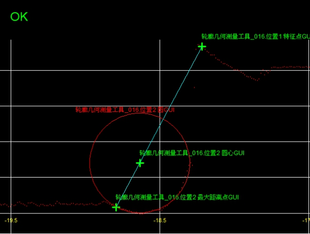

在3D测量中，轮廓角度距离交点测量工具主要是获取轮廓数据中两个几何元素之间的角度、距离、交点信息。图1所示为轮廓角度距离交点测量工具对于获取轮廓数据中轮廓点到轮廓圆最大距离的一个示例。该例子通过几何元素（轮廓点、轮廓圆）的解析表达式来获取它们之间的距离信息。

轮廓角度距离交点测量工具提供了2种角度测量，11种距离测量以及3种交点测量，如下表1所示。
表1 轮廓结合测量类型
| 角度测量 | 距离测量 | 交点测量 |
|---|---|---|
| 1.轮廓点到轮廓点的角度 | 1.轮廓点到轮廓点的距离 | 1.轮廓直线与轮廓直线的交点 |
| 2.轮廓直线到轮廓直线的角度 | 2.轮廓点到轮廓直线的距离 | 2.轮廓直线与轮廓圆的交点 |
| 3.轮廓点到轮廓圆的距离（最大、最小、圆心） | 3.轮廓圆与轮廓圆的交点 | |
| 4.轮廓直线到轮廓圆的距离（最大、最小、圆心） | ||
| 5.轮廓圆到轮廓圆的距离（最大、最小、圆心） |
| 分类 | 参数名称 | 参数描述 |
|---|---|---|
| 属性窗口 | 几何测量类型 | 轮廓角度距离交点测量工具的测量类型如表1所示。 |
| 图像窗口 | 轮廓图像 | 显示待检测的轮廓图像。 |
| 数据链 | 输入轮廓数据 | 输入待检测的轮廓图像的轮廓数据，该参数来源于截面生成工具的输出轮廓数据参数。 |
| 位置1/2 特征点 | 用于几何测量的轮廓点，该参数来自轮廓位置和尺寸测量工具。 | |
| 位置1/2 直线 | 用于几何测量的轮廓直线，该参数来自轮廓线圆拟合工具。 | |
| 位置1/2 圆 | 用于几何测量的轮廓圆，该参数来自轮廓线圆拟合工具。 | |
| 高级界面 | 无 | 无 |
| 分类 | 参数名称 | 参数描述 |
|---|---|---|
| 监视窗口 | 输入轮廓数据 | 输入待检测的轮廓图像的轮廓数据，包括轮廓点数，有效点数。 |
| 位置1/2 特征点 | 轮廓点的坐标信息。 | |
| 位置1/2 直线 | 轮廓直线的信息，包括位置坐标、方向向量和旋转角。 | |
| 位置1/2 圆 | 轮廓圆的信息，包圆心坐标和半径。 | |
| 距离点 | 距离测量中，距离端点的坐标信息（仅在距离测量中有效）。 | |
| 距离 | 距离测量结果（仅在角度测量中有效）。 | |
| 角度 | 角度测量结果（仅在角度测量中有效）。 | |
| 交点数量 | 交点结果的个数（仅在交点测量中有效）。 | |
| 交点 | 直线与圆或圆与圆的交点坐标（仅在交点测量中且交点数量不为零时有效）。 | |
| 执行结果 | 工具执行结果。 | |
| 执行时间 | 工具执行时间。 | |
| 图像窗口 | 轮廓图像 | 显示待检测的轮廓图像。 |
| 点/直线/圆 | 显示轮廓点/轮廓直线/轮廓圆。 | |
| 距离/角度/交点 | 显示距离/角度/交点的测量结果。 | |
| 数据链 | 同监视窗口参数，供后续工具使用。 |
Step 1 设置测量类型
按照需要测量的类型，对测量类型进行设置。测量类型主要包括：轮廓点，轮廓直线和轮廓圆之间的距离，角度和交点等16种类型，如图2所示。
轮廓点与轮廓点的角度：两轮廓点连线与X轴的夹角θ，如图2(a)所示。其中，θ的取值范围为[-π,π)。
轮廓点到轮廓点的距离：两轮廓点之间的距离d，如图2(a)所示。
轮廓点到轮廓直线的距离：轮廓点到轮廓直线之间的距离d，如图2(b)所示。
轮廓点到轮廓圆的距离：轮廓点到轮廓圆的距离包括轮廓点到轮廓圆的最小距离dmin、轮廓点到轮廓圆圆心的距离dcenter和轮廓点到轮廓圆的最大距离dmax，分别如图2©~2(e)所示。
轮廓直线与轮廓直线的角度：两轮廓直线之间的夹角θ，如图2(f)所示。其中，θ的取值范围为[0,π/2]。
轮廓直线与轮廓直线的交点：两轮廓直线之间的交点，如图2(f)所示。
轮廓直线到轮廓圆的距离：轮廓直线到轮廓圆的距离包括轮廓直线到轮廓圆的最小距离dmin、轮廓直线到轮廓圆心的距离dcenter和轮廓直线到轮廓圆的最大距离dmax，分别如图2(g)~2(i)所示。
轮廓直线与轮廓圆的交点：轮廓直线与轮廓圆的交点，如图2(j)所示。
轮廓圆到轮廓圆的距离：轮廓圆到轮廓圆的距离包括轮廓圆到轮廓圆的最小距离dmin、两轮廓圆轮廓圆心的距离dcenter和轮廓圆到轮廓圆的最大距离dmax，分别如图2(k)~2(m)所示。
轮廓圆与轮廓圆的交点：两个轮廓圆之间的交点，如图2(n)所示。
Step 2 设置几何元素的检测区域和特征
完成测量类型的设置后，需要对参与测量的两个几何元素进行获取（通过参数链链接）。
Step 3 执行测量和输出结果
完成上述步骤后，就可以执行测量了。输出的结果将包括两个几何元素（轮廓点，轮廓直线或轮廓圆）的信息以及测量结果（距离，角度或交点坐标）的信息。
无
参见“\Samples\3D\深度图\3D测量工具.gvp”。